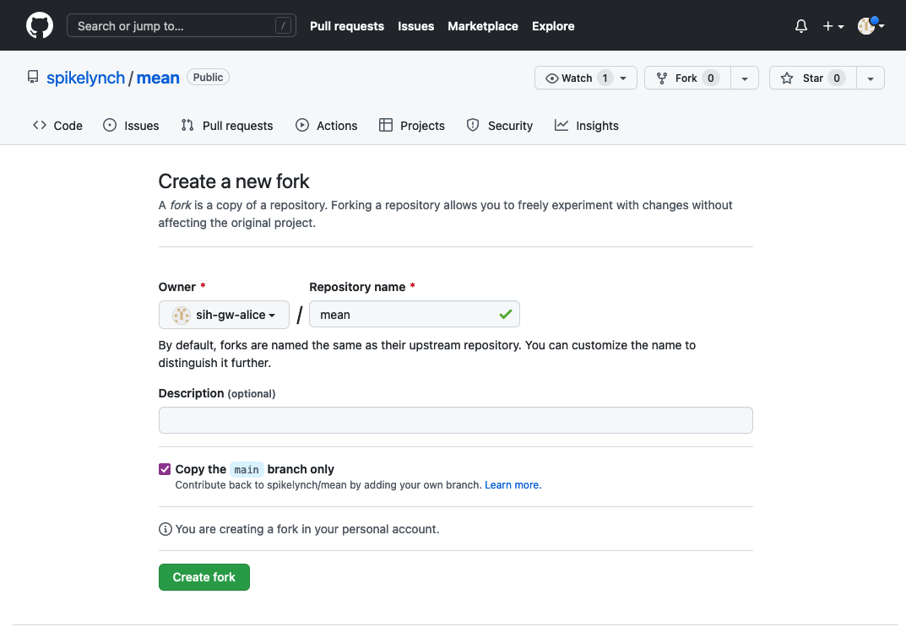
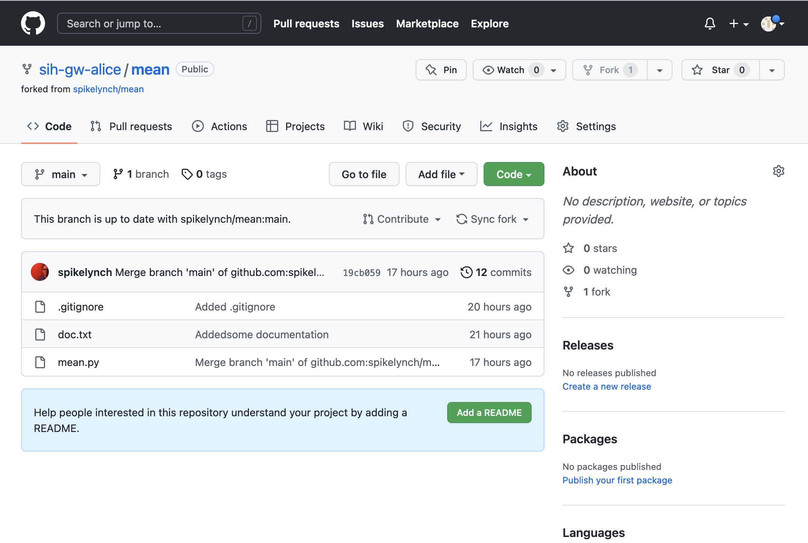
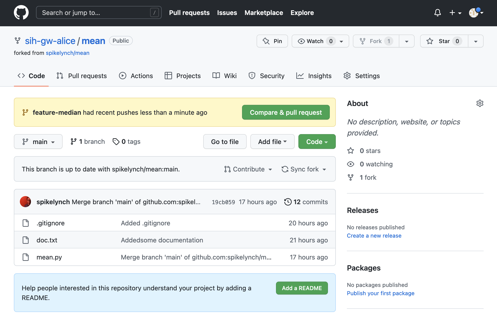
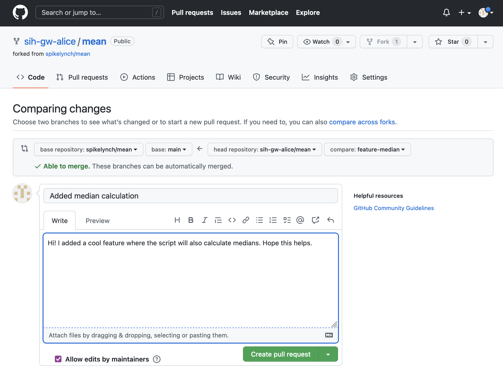
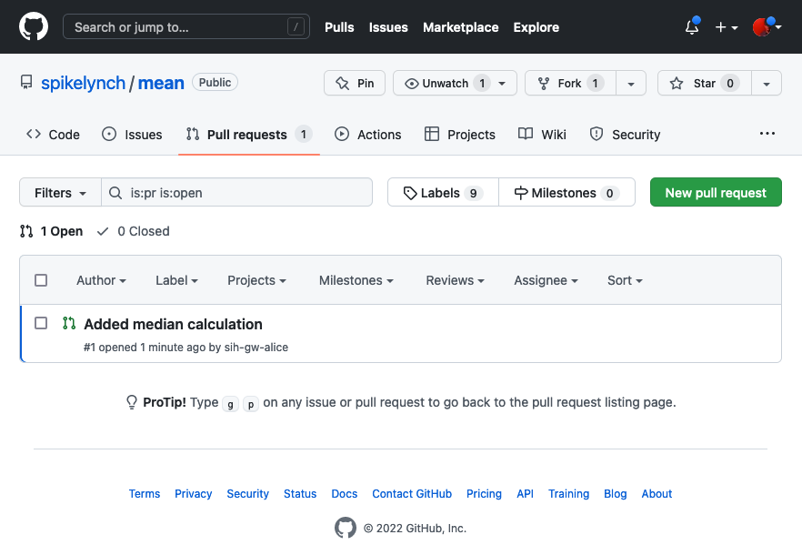
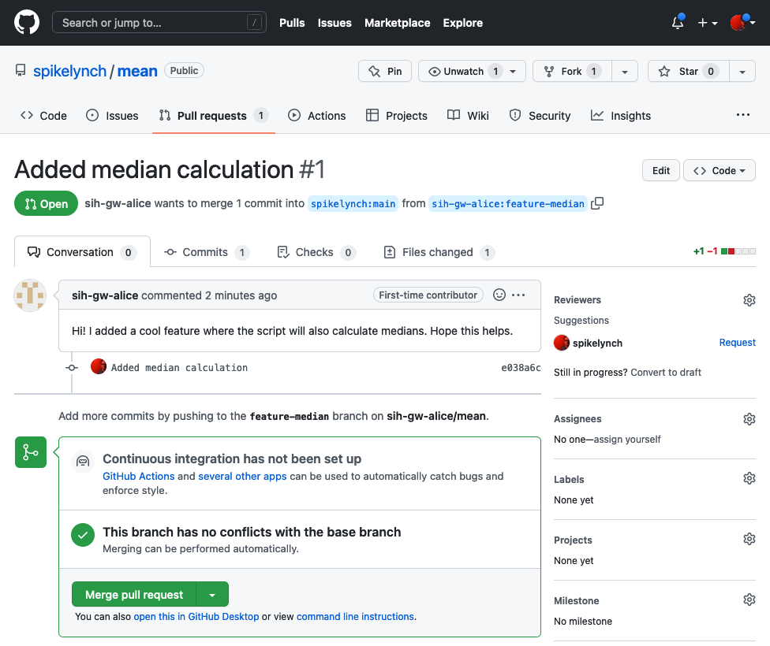
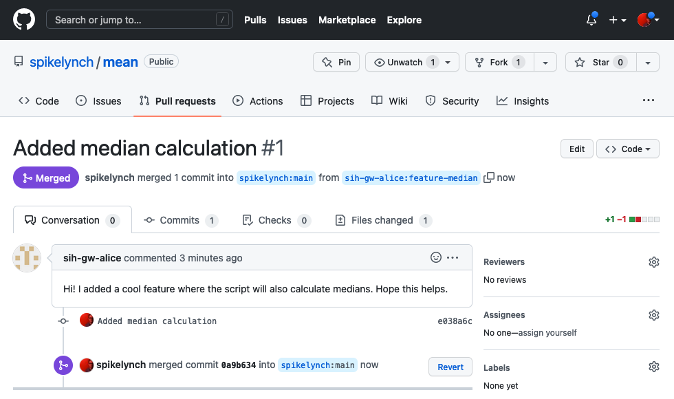

Pull requests
Questions
- How can I contribute to someone else’s project with a pull request?
Objectives
- Understand how to fork someone else’s codebase
- Understand how to contribute your changes back to theirs with a pull request
We’ve just seen a branching workflow for allowing collaboration between a team of developers, each of whom has a local repo and who share a repo on GitHub.
In this section, we’ll step through what’s called a fork-based workflow, which is a way to contribute code to another team’s project. This is how you would commonly contribute to open-source software like scikit-learn, pandas and even Python itself.
We’ll do this exercise in pairs again, as we did for the first GitHub exercise, but this time we’ll imagine that Bob and Alice aren’t on the same team - instead, Bob wants to contribute a new feature to the mean.py script.
Because Bob’s not part of Alice’s team, he won’t have write access to her repository, so he’ll have to create his own.
Forking is the name for this process. It’s essentially the same as a clone, but it’s all happening on GitHub’s servers.
To do this, Bob needs to visit Alice’s repository on GitHub, and click on the “Fork” button on the top right.

This will create a new version of the mean repository in Bob’s GitHub account

Bob can now clone his own repository to his local machine. We’ll put this copy in a directory called fork-mean to keep it separate from any other copies we’ve made
git clone git@github.com:bob/mean.git ~/Desktop/fork-meanNow Bob can start a new branch for development on his new feature, called feature-median:
cd fork-mean
git checkout -b feature-medianSwitched to a new branch 'feature-median'Once he’s create the new branch, he can make his edits to mean.py
nano mean.py
cat mean.pyimport pandas as pd
COLUMN="red"
dataframe = pd.read_csv("rgb.csv")
subset = dataframe[COLUMN]
print(subset.mean())
print(subset.median())And add and commit the changes as usual:
git add mean.py
git commit mean.py -m "Added median calculation"[feature-median] f1ea0c1] Added median calculation
1 file changed, 2 insertions(+), 2 deletions(-)Bob now has his new, median-enabled version of the script on his feature branch. To create a pull request, the first thing he does is push it to his fork of the repository.
git pushfatal: The current branch feature-median has no upstream branch.
To push the current branch and set the remote as upstream, use
git push --set-upstream origin feature-median
To have this happen automatically for branches without a tracking
upstream, see 'push.autoSetupRemote' in 'git help config'.Oh - that’s right, we need to tell Git to set an upstream for our feature branch, as it doesn’t exist on GitHub yet.
git push --set-upstream origin feature-medianEnumerating objects: 5, done.
Counting objects: 100% (5/5), done.
Delta compression using up to 12 threads
Compressing objects: 100% (3/3), done.
Writing objects: 100% (3/3), 311 bytes | 311.00 KiB/s, done.
Total 3 (delta 2), reused 0 (delta 0), pack-reused 0
remote: Resolving deltas: 100% (2/2), completed with 2 local objects.
remote:
remote: Create a pull request for 'feature-median' on GitHub by visiting:
remote: https://github.com/sih-gw-alice/mean/pull/new/feature-median
remote:
To github.com:sih-gw-alice/mean.git
* [new branch] feature-median -> feature-median
branch 'feature-median' set up to track 'origin/feature-median'.That’s pushed Bob’s changes to GitHub and created a new branch. Notice that GitHub is prompting us to create a pull request for this branch already, and has even provided us with a URL to visit. Note that this is a message from GitHub (this is what the remote: text means) rather than Git itself.
If we go to Bob’s GitHub, the new branch is there, and the frontend has noticed recent changes and is prompting us to “Compare & pull request”.

A pull request (PR) is exactly that - we’re telling the maintainer of a project - Alice, in this case - that we have something like a bug fix or a feature on our branch of the repository, and we want them to pull it into the main branch of the project.
If Bob clicks the “Compare & pull request” button, he is taken to this page

This allows Bob to pick which repository and branches he wants to compare, and GitHub decides whether the branches can be merged automatically, or if there’s a conflict. In this case, there’s no conflict between Bob’s branch and the main branch of Alice’s repo.
Bob creates his pull request by adding some notes explaining his PR, and clicking the “Create pull request” button.
If Alice or another of her project team visit their repository, they’ll notice that the “Pull requests” item is highlighted, and if they click it, they should see Bob’s pull request in the list.

Clicking the pull request title takes Alice through to a page for the pull request, which shows Bob’s comments, and a lot of other ways to explore the pull request - she can see the list of commits, the files which have been changed, and so on.
It’s very common for projects to have continuous integration, or CI, set up on GitHub - this will run tests automatically on pull requests or particular branches, and the ‘Checks’ tab is where Alice could see whether those tests had passed or not.
Our repo hasn’t had CI set up, so GitHub reminds us about it.

As there are no conflicts with the base branch, Alice can merge the changes.

This was an example of a simple pull request, where Git was able to automatically merge the new code with the existing main branch - using the same algorithm as when we merged a branch locally.
It’s also possible for the changes on a pull request to conflict with the main branch - the two could have divergent history. In this case, GitHub will indicate this to the maintainer, and provides an interface for showing each of the conflicts, and also for resolving them via the web interface.
There are other ways to handle this situation - the maintainer could ask the contributor to pull the latest updates from main and resolve the conflicts at their end. How this is handled will depend a lot on the particular project being contributed to.
Large open-source projects tend to have a lot of structure around pull requests: - They will, for instance, provide a checklist of things contributors should do when contributing code, for example - Require that PRs be raised against an existing issue - Provide a template for issues and/or PR comments, and so on.
A pull request can be seen as the start of a collaboration between a developer and the maintainer - this can take the form of comments on the PR, or a more detailed kind of collaboration called a code review, which GitHub has a very good interface for - this allows a maintainer to add comments or questions to each individual change in a PR.
Note, this isn’t just used for open-source projects - many teams use pull requests and code review internally as an important form of quality control. For example, here at SIH, we use pull requests to make changes to our lesson materials, where the lesson author will be the only one who can commit to the main branch, whereas everyone else forks the repository to their accounts, makes changes and then puts in pull requests to have those changes integrated into the main codebase.
The key difference between a forking-based workflow over a branch-based workflow, from a usability perspective, is that the forking-based workflow forces the owner of the main branch to review and approve all of the changes to the main codebase manually, thereby giving them more control over the codebase itself.
Key Points
- Forking allows you to create your own copy of an existing open-source project
- Pull requests are a way to offer your changes back to a project
All materials copyright Sydney Informatics Hub, University of Sydney